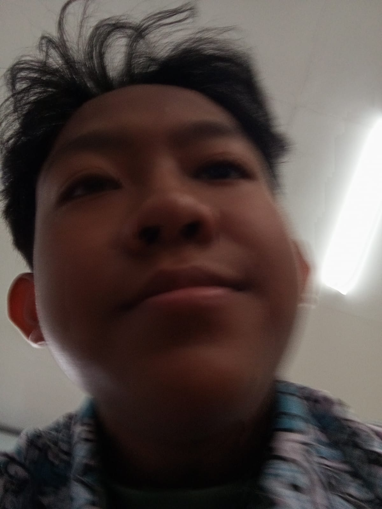

Kesehatan
Ya allah sayangi abri.Ya allah lindungi abri.Ya allah jaga abri.Ya allah cintai abri Ya allah semoga teman saya yang satu ini selalu di beri kesehatan,keselamatan dan umur yang panjang.
FROM ME TO MY FRIEND
Salah satu teman baikku
Yang umurnya baru bertambah.
OKE denger. jujur asalnya gua males bikin ini. tadinya gua mau ngasih ucapan biasa aja. secara langsung di sekolah.
Tapi gua ingat kalo ini tentang YOU. dan gua pikir ucapan biasa aja ga cukup ga sih apalagi ngeliat hal hal yang udah kita lewati -_-.
lu jadi salah satu orang yang paling gua percaya di depan lu atau lebih tepatnya kita para orang have gua bisa nunjukin sifat gua yang sebenernya tanpa ragu
jujur gua orangnya gampang overthingking. Kalau gua ngobrol sama orang tuh gua biasanya hati-hati dan canggung, tapi di depan kalian gua ngerasa gua lebih nyaman dan bebas
Ya itu baru beberapa yang mau gua ucapin tapi intinya....
I am so, so, SO thankful lu udah bersedia jadi temen gua. bersedia nemenin gua,ngajak ngobrol gua, ngedengerin cerita cerita gua dan gua harap kedepannya akan terus gini semoga kita bisa terus temenan sampai kita bisa mencapai cita cita dan saling berbagi cerita lagi.
Sekali lagi terimakasih,gua ngerasa beruntung punya temen kaya lu.
Ya allah sayangi abri.Ya allah lindungi abri.Ya allah jaga abri.Ya allah cintai abri Ya allah semoga teman saya yang satu ini selalu di beri kesehatan,keselamatan dan umur yang panjang.
Ya allah semoga dengan bertambahnya usia abri, ditambah kan pula rezekinya.BTW kalo ada rezeki bileh lah kupat hehe
bukan hubungan yang itu ya tapi pertemanan.Ya allah semoga kita bisa terus berteman walau sudah berbeda kelas,sekolah,kota,kabupaten,provinsi,bahkan jika sudah berbeda negara.
Kok kaya ada yang kurang ya
